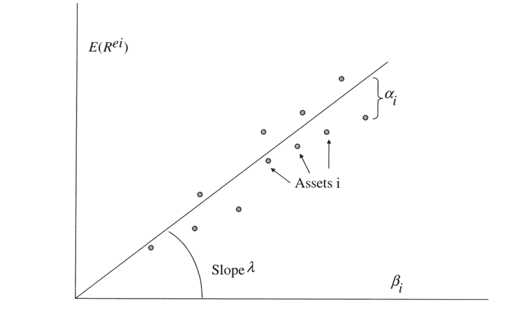

12. Regression-Based Tests of Linear Factor Models
12. Regression-Based Tests of Linear Factor Models
本章导读 接下来四章研究：如何估计与评价线性因子模型 \(m=b'f\)（等价 \(E(R^e)=\beta'\lambda\)）——实证资产定价中最常见的模型。每种方法都围绕同样的问题：如何估参数、参数标准误、定价误差标准误，以及形如 \(\hat\alpha'V^{-1}\hat\alpha\) 的模型检验。本章（Cochrane 第 12 章）讲经典的回归检验。统一主题：所有技术都归结为两种基本思路——时间序列回归或截面回归（时序是截面的极限情形）。§12.1 时序回归（因子是超额收益时：跑 \(R^{ei}=\alpha_i+\beta_i f+\varepsilon\)，检验 \(\alpha=0\)；GRS 检验）；§12.2 截面回归（两步法、OLS/GLS、Shanken 对估计 \(\beta\) 的校正）；§12.3 Fama-MacBeth 过程。
12. Regression-Based Tests of Linear Factor Models
Overview The next four chapters study how to estimate and evaluate linear factor models \(m=b'f\) (equivalently \(E(R^e)=\beta'\lambda\)) — by far the most common models in empirical asset pricing. Each method addresses the same questions: how to estimate parameters, their standard errors, the pricing-error standard errors, and a model test of the form \(\hat\alpha'V^{-1}\hat\alpha\). This chapter (Cochrane Ch 12) covers the classic regression tests. The unifying theme: all techniques reduce to one of two basic ideas — time-series regression or cross-sectional regression (the time-series being a limiting case of the cross-sectional). §12.1 time-series regressions (when factors are excess returns: run \(R^{ei}=\alpha_i+\beta_i f+\varepsilon\), test \(\alpha=0\); the GRS test); §12.2 cross-sectional regressions (two-pass, OLS/GLS, the Shanken correction for estimated \(\beta\)); §12.3 the Fama-MacBeth procedure.
12.1 时间序列回归 / Time-Series Regressions
当因子本身是超额收益（如 CAPM 的 \(R^{em}=R^m-R^f\)）、检验资产也都是超额收益时，跑 OLS 时序回归 \(R^{ei}_t=\alpha_i+\beta_i f_t+\varepsilon^i_t\)。模型 \(E(R^{ei})=\beta_iE(f)\) 只有一个含义：所有截距 \(\alpha_i\) 都应为零（截距即定价误差）。Black-Jensen-Scholes (1972) 的策略：跑时序回归，因子风险溢价就是因子样本均值 \(\hat\lambda=E_T(f)\)，再用 OLS 标准误对 \(\alpha\) 做 \(t\) 检验。
要检验所有 \(\alpha\) 联合为零，需各资产截距的联合分布（误差跨资产相关 \(E(\varepsilon^i\varepsilon^j)\ne0\)）。经典（无自相关/同方差）的 χ² 检验：
12.1 Time-Series Regressions
When the factor is itself an excess return (e.g. the CAPM's \(R^{em}=R^m-R^f\)) and the test assets are all excess returns, run OLS time-series regressions \(R^{ei}_t=\alpha_i+\beta_i f_t+\varepsilon^i_t\). The model \(E(R^{ei})=\beta_iE(f)\) has just one implication: all intercepts \(\alpha_i\) should be zero (the intercept is the pricing error). Black-Jensen-Scholes (1972) strategy: run the time-series regressions, the factor risk premium is the factor's sample mean \(\hat\lambda=E_T(f)\), then \(t\)-test the \(\alpha\) with OLS standard errors.
To test all \(\alpha\) jointly zero we need the joint distribution of the intercepts (errors are correlated across assets, \(E(\varepsilon^i\varepsilon^j)\ne0\)). The classic (no autocorrelation/homoskedasticity) χ² test:
$$T\left(1+\frac{E_T(f)^2}{\hat\sigma^2(f)}\right)^{-1}\hat\alpha'\Sigma^{-1}\hat\alpha\sim\chi^2_N,\tag{12.3}$$
其中 \(\Sigma\) 是残差协方差阵。考虑 \(\Sigma\) 的抽样变动得有限样本 F 分布——这就是著名的 Gibbons-Ross-Shanken (GRS) 检验（需误差正态、无关、同方差，在有限样本精确）：
where \(\Sigma\) is the residual covariance matrix. Accounting for the sampling variation of \(\Sigma\) gives a finite-sample F distribution — the famous Gibbons-Ross-Shanken (GRS) test (requires normal, uncorrelated, homoskedastic errors; exact in finite samples):
$$\frac{T-N-1}{N}\left(1+\frac{E_T(f)^2}{\hat\sigma^2(f)}\right)^{-1}\hat\alpha'\Sigma^{-1}\hat\alpha\sim F_{N,\,T-N-1}.\tag{12.4}$$
GRS 检验的几何含义 / The geometry of the GRS test 核心是定价误差的二次型 \(\hat\alpha'\Sigma^{-1}\hat\alpha\)。回忆：单贝塔表示成立 \(\iff\) 参照收益在均值方差前沿上。故该检验等价于检验"因子 \(f\) 是否事前均值方差有效"。即便 \(f\) 在真前沿上，样本里别的收益也会因运气超过它，故 \(f\) 通常落在事后（样本）前沿之内——但不应太靠里。GRS 把统计量写成 \(f\) 离事后前沿多远：\(\propto(\mu_q/\sigma_q)^2-(E_T(f)/\hat\sigma(f))^2\)，其中 \(\mu_q/\sigma_q\) 是检验资产加 \(f\) 构成的事后切线组合的（最大）夏普比率——即"加入其他资产能把夏普比率提高多少"。多因子时夏普比率 \(E_T(f)/\hat\sigma(f)\) 推广为 \(E_T(f)'\Omega^{-1}E_T(f)\)。The core is the quadratic form in pricing errors \(\hat\alpha'\Sigma^{-1}\hat\alpha\). Recall: a single-beta representation exists \(\iff\) the reference return is on the mean-variance frontier. So the test is equivalent to testing whether the factor \(f\) is ex-ante mean-variance efficient. Even if \(f\) is on the true frontier, other returns beat it in-sample by luck, so \(f\) usually lies inside the ex-post (sample) frontier — but not too far inside. GRS write the statistic as how far \(f\) is inside the ex-post frontier: \(\propto(\mu_q/\sigma_q)^2-(E_T(f)/\hat\sigma(f))^2\), where \(\mu_q/\sigma_q\) is the (maximum) Sharpe ratio of the ex-post tangency portfolio from the test assets plus \(f\) — i.e. how much adding the other assets improves the Sharpe ratio. With many factors the Sharpe ratio \(E_T(f)/\hat\sigma(f)\) generalizes to \(E_T(f)'\Omega^{-1}E_T(f)\).
用 GMM 导出，免 i.i.d. 假设。 把 N 个时序回归一起写成 \(R^e_t=\alpha+\beta f_t+\varepsilon_t\)，用 OLS 矩 \(g_T=[E_T(\varepsilon_t);\ E_T(f_t\varepsilon_t)]=0\)（恰好识别，\(a=I\)），代入 GMM 公式 \(\operatorname{var}(\hat\alpha\ \hat\beta)=\tfrac1T d^{-1}Sd^{-1\prime}\) (12.7) 即得。在"误差时间无关、与因子独立、同方差"假设下，\(S\) 简化、最终回到漂亮的 (12.3)；但现在无需这些假设——直接算 (12.7) 即可构造稳健标准误。这也提醒：GMM 与 \(p=\mathbb E(mx)\) 不必绑定，也可对期望收益-贝塔模型做 GMM。
12.2 截面回归 / Cross-Sectional Regressions
Derive via GMM, free of i.i.d. assumptions. Write the N time-series regressions together as \(R^e_t=\alpha+\beta f_t+\varepsilon_t\), use the OLS moments \(g_T=[E_T(\varepsilon_t);\ E_T(f_t\varepsilon_t)]=0\) (exactly identified, \(a=I\)), and plug into the GMM formula \(\operatorname{var}(\hat\alpha\ \hat\beta)=\tfrac1T d^{-1}Sd^{-1\prime}\) (12.7). Under "errors uncorrelated over time, independent of factors, homoskedastic," \(S\) simplifies and you recover the pretty (12.3); but now you need none of those assumptions — just compute (12.7) for robust standard errors. This also reminds us GMM and \(p=\mathbb E(mx)\) are not paired: one can do GMM on an expected return-beta model too.
12.2 Cross-Sectional Regressions
截面回归可在因子不是收益时也适用。核心经济问题是为何平均收益跨资产不同：高 β（对高溢价因子的高暴露）应有高平均收益。如下图，每个点是一个资产，模型说平均收益正比于 β。
Cross-sectional regression works even when the factor is not a return. The central economic question is why average returns vary across assets: high β (high exposure to high-premium factors) should mean high average returns. In the figure, each dot is an asset, and the model says average returns are proportional to β.

图 12.1 截面回归。横轴为各资产的 \(\beta_i\)，纵轴为平均超额收益 \(E(R^{ei})\)；拟合直线斜率为因子风险溢价 \(\lambda\)，各点到直线的纵向距离 \(\alpha_i\) 即定价误差。
Figure 12.1 Cross-sectional regression. The horizontal axis is each asset's \(\beta_i\), the vertical its average excess return \(E(R^{ei})\); the fitted line's slope is the factor risk premium \(\lambda\), and each point's vertical distance \(\alpha_i\) to the line is the pricing error.
两步法。 先时序回归估 β，再跨资产回归 \(E_T(R^{ei})=\beta_i'\lambda+\alpha_i\)——β 是右侧变量、\(\lambda\) 是系数、残差 \(\alpha_i\) 是定价误差。理论说零贝塔超额收益（常数）应为零，可强加或估出再看是否小。OLS 截面估计 \(\hat\lambda=(\beta'\beta)^{-1}\beta'E_T(R^e)\)、\(\hat\alpha=E_T(R^e)-\hat\lambda\beta\)。检验 \(\hat\alpha'\operatorname{cov}(\hat\alpha)^{-1}\hat\alpha\sim\chi^2_{N-K}\)（因估了 \(\lambda\)，协方差阵奇异、自由度减 K，须用广义逆）。
GLS 截面回归。 因截面残差相关，标准建议用 GLS（以 \(\tfrac1T(\Sigma+\beta\Omega_f\beta')\) 为误差协方差）：\(\hat\lambda=(\beta'\Sigma^{-1}\beta)^{-1}\beta'\Sigma^{-1}E_T(R^e)\)，检验简化为 \(T\hat\alpha'\Sigma^{-1}\hat\alpha\sim\chi^2_{N-1}\)。但 §11.5 的告诫在此适用：GLS 虽更有效，\(\Sigma\) 难估难逆（尤其 N 大时），常可选 OLS 之稳健。GLS 可理解为对收益空间的变换，聚焦统计上信息量最大的组合 \(CR^e\)——但这些组合常含极端多空头寸。
Two-pass. First estimate β by time-series regression, then regress across assets \(E_T(R^{ei})=\beta_i'\lambda+\alpha_i\) — β are the regressors, \(\lambda\) the coefficients, the residuals \(\alpha_i\) the pricing errors. Theory says the zero-beta excess return (constant) should be zero, which you can impose or estimate and check is small. The OLS cross-sectional estimates are \(\hat\lambda=(\beta'\beta)^{-1}\beta'E_T(R^e)\), \(\hat\alpha=E_T(R^e)-\hat\lambda\beta\). Test \(\hat\alpha'\operatorname{cov}(\hat\alpha)^{-1}\hat\alpha\sim\chi^2_{N-K}\) (since \(\lambda\) was estimated, the covariance is singular, df reduced by K, use a generalized inverse).
GLS cross-sectional regression. Since the cross-sectional residuals are correlated, standard advice is GLS (with error covariance \(\tfrac1T(\Sigma+\beta\Omega_f\beta')\)): \(\hat\lambda=(\beta'\Sigma^{-1}\beta)^{-1}\beta'\Sigma^{-1}E_T(R^e)\), and the test simplifies to \(T\hat\alpha'\Sigma^{-1}\hat\alpha\sim\chi^2_{N-1}\). But the §11.5 caveat applies: GLS is more efficient yet \(\Sigma\) is hard to estimate and invert (especially when N is large), so OLS's robustness may be preferable. GLS can be read as a transformation of the return space onto the statistically most informative portfolios \(CR^e\) — which often contain extreme long-short positions.
Shanken 校正：β 是估出来的 / The Shanken correction: β are estimated 标准 OLS 公式假定右侧 β 固定，但 β 是从时序回归估出的"生成回归元 (generated regressors)"，这即使在渐近意义下也有影响。Shanken (1992b) 的校正给标准误乘上一个因子 \((1+\lambda'\Omega_f^{-1}\lambda)\)：\(\sigma^2(\hat\lambda_{GLS})=\tfrac1T[(\beta'\Sigma^{-1}\beta)^{-1}(1+\lambda'\Omega_f^{-1}\lambda)+\Omega_f]\)，GLS 检验变为 \(T(1+\lambda'\Omega_f^{-1}\lambda)^{-1}\hat\alpha'\Sigma^{-1}\hat\alpha\sim\chi^2_{N-K}\)。这个校正项约等于因子的夏普比率平方：CAPM 年度数据 \(\lambda^2/\sigma^2\approx0.25\) 不可忽略，但月度 \(\approx0.02\) 很小。用 GMM 同时处理"生成 β 的矩"与"截面回归的矩"，可优雅地一举得到这些校正（远比 Shanken 原文简单）。The standard OLS formulas assume the regressors β are fixed, but β are "generated regressors" estimated from the time-series regression, which matters even asymptotically. Shanken's (1992b) correction multiplies the standard errors by a factor \((1+\lambda'\Omega_f^{-1}\lambda)\): \(\sigma^2(\hat\lambda_{GLS})=\tfrac1T[(\beta'\Sigma^{-1}\beta)^{-1}(1+\lambda'\Omega_f^{-1}\lambda)+\Omega_f]\), and the GLS test becomes \(T(1+\lambda'\Omega_f^{-1}\lambda)^{-1}\hat\alpha'\Sigma^{-1}\hat\alpha\sim\chi^2_{N-K}\). The correction is roughly the factor's squared Sharpe ratio: in the CAPM with annual data \(\lambda^2/\sigma^2\approx0.25\) (not ignorable), but monthly \(\approx0.02\) (small). Mapping the whole thing into GMM — treating the moments that generate β alongside those that give λ — yields these corrections elegantly (far simpler than Shanken's original paper).
时序 vs 截面。 关键区别：因子不是收益时只能用截面回归（时序需 \(\hat\lambda=E_T(f)\)）。因子是收益时二者不必相同：时序回归令因子定价误差恒为零、过原点且穿过因子点，无视其他点；OLS 截面回归则选斜率截距以最小化所有点的平方误差。一个漂亮结论：因子是收益、且把因子纳入检验资产时，GLS 截面回归与时序回归完全相同（因子时序回归残差为零、GLS 把全部权重放在它上面，故 \(\hat\lambda=E_T(f)\)）。"有效"技术为何忽略其他资产的定价误差、只用因子均值估溢价？因为 \(R^e_t=a+\beta f_t+\varepsilon_t\) 中每个资产的样本平均收益 = β 乘因子样本均值加残差，"信号 + 噪声"不含超出信号本身的信息。
12.3 Fama-MacBeth 过程 / The Fama-MacBeth Procedure
Time series vs. cross section. The key difference: when the factor is not a return, only cross-sectional regression works (time-series needs \(\hat\lambda=E_T(f)\)). When the factor is a return the two differ: the time-series regression forces the factor's pricing error to zero, drawing a line through the origin and the factor while ignoring the other points; OLS cross-sectional picks slope and intercept to minimize the squared errors of all points. A pretty result: when the factor is a return and is included among the test assets, the GLS cross-sectional regression is identical to the time-series regression (the factor's time-series residual is zero, so GLS puts all weight on it, giving \(\hat\lambda=E_T(f)\)). Why does the "efficient" technique ignore the other assets' pricing errors and use only the factor mean to estimate the premium? Because in \(R^e_t=a+\beta f_t+\varepsilon_t\) each asset's sample mean return = β times the factor's sample mean plus the residual; "signal plus noise" carries no information beyond the signal itself.
12.3 The Fama-MacBeth Procedure
Fama-MacBeth (1973) 是历史上重要、计算简单、至今广用的替代过程：先时序回归估 β，然后在每个时点跑一次截面回归 \(R^{ei}_t=\beta_i'\lambda_t+\alpha_{it}\)，再取时间平均 \(\hat\lambda=\tfrac1T\sum_t\hat\lambda_t\)、\(\hat\alpha_i=\tfrac1T\sum_t\hat\alpha_{it}\)。最妙之处：用截面估计随时间的标准差给出标准误 \(\sigma^2(\hat\lambda)=\tfrac1{T^2}\sum_t(\hat\lambda_t-\hat\lambda)^2\)。直觉：抽样误差本是"换个样本统计量怎么变"，无法重抽就把样本切半、切四份……用 \(\hat\lambda_t\) 随时间的变动推断其跨样本变动（即样本均值方差 \(\sigma^2/T\) 的思想）。
Fama-MacBeth (1973) is a historically important, computationally simple, still-widely-used alternative: first estimate β by time-series regression, then run a cross-sectional regression at each date \(R^{ei}_t=\beta_i'\lambda_t+\alpha_{it}\), and average over time \(\hat\lambda=\tfrac1T\sum_t\hat\lambda_t\), \(\hat\alpha_i=\tfrac1T\sum_t\hat\alpha_{it}\). The clever part: use the time-series standard deviation of the cross-sectional estimates for the standard errors, \(\sigma^2(\hat\lambda)=\tfrac1{T^2}\sum_t(\hat\lambda_t-\hat\lambda)^2\). Intuition: sampling error is how a statistic varies across samples; unable to re-sample, cut the sample in half, quarters, …, and deduce cross-sample variation from how \(\hat\lambda_t\) varies over time (the \(\sigma^2/T\) idea for a sample mean).
Fama-MacBeth 其实是修正截面相关的标准误 / Fama-MacBeth is really a cross-sectional-correlation correction 命题：若右侧变量 \(x_{it}\) 不随时间变、且误差跨截面相关但时间无关，则 Fama-MacBeth 估计、纯截面 OLS、混合时序截面 OLS 三者完全相同；Fama-MacBeth 标准误也等于修正了残差截面相关的截面/混合 OLS 标准误。若 \(x_{it}\) 随时间变则三者不再相等。故 Fama-MacBeth 只是计算"修正截面相关标准误"的另一种方式。务必避免的错误：混合时序截面 OLS 不修正标准误——金融中误差截面高度相关，如此算出的标准误常差 10 倍！注意：(1) Fama-MacBeth 默认 \(\hat\lambda_t\) 时间无关；若相关（如公司金融数据）须用长期协方差。(2) 它不校正 β 是估计量这一事实——用时应至少算一下 Shanken 校正项是否大。历史上 Fama-MacBeth 的重要性还在于允许 β 随时间变。Proposition: if the regressors \(x_{it}\) do not vary over time and the errors are cross-sectionally correlated but not autocorrelated, then the Fama-MacBeth estimate, the pure cross-sectional OLS, and the pooled time-series cross-section OLS are identical; and the Fama-MacBeth standard errors equal the cross-sectional/pooled OLS standard errors corrected for residual cross-correlation. None hold if \(x_{it}\) vary over time. So Fama-MacBeth is just another way to compute cross-correlation-corrected standard errors. The error to avoid: pooled time-series cross-section OLS with no standard-error correction — finance errors are so cross-sectionally correlated that such standard errors are often off by a factor of 10! Caveats: (1) Fama-MacBeth assumes \(\hat\lambda_t\) uncorrelated over time; if correlated (e.g. corporate-finance data) use a long-run covariance. (2) It does not correct for β being estimated — at least check the Shanken correction is not large. Historically Fama-MacBeth also mattered because it allowed time-varying β.
小结 / Summary
线性因子模型的检验归结为两条路：时序回归（因子须是收益，检验截距 \(\alpha=0\)，GRS 给精确 F 检验，几何上即"因子是否在均值方差前沿上"）与截面回归（因子可非收益，两步法拟合 \(E(R^e)=\beta\lambda\)，OLS/GLS，Shanken 校正估计 β 的影响）。两者在"因子是收益且纳入检验资产"时经 GLS 等价。Fama-MacBeth 是计算截面相关修正标准误的等价而直观的方式，但不修正 β 估计、且对混合数据须当心时间相关。下一章用 GMM 在 \(p=\mathbb E(mx)\) 形式下处理同一问题。
Summary
Testing linear factor models reduces to two routes: time-series regression (factor must be a return, test intercepts \(\alpha=0\), GRS gives an exact F-test, geometrically "is the factor on the mean-variance frontier") and cross-sectional regression (factor may be a non-return, two-pass fit of \(E(R^e)=\beta\lambda\), OLS/GLS, Shanken correction for estimated β). The two coincide via GLS when the factor is a return included among the test assets. Fama-MacBeth is an equivalent, intuitive way to compute cross-correlation-corrected standard errors, but does not correct for estimated β and needs care about time correlation in pooled data. The next chapter handles the same problem with GMM in \(p=\mathbb E(mx)\) form.
习题 / Problems
- 把 CAPM 写成超额收益形式时，检验资产能否是两风险资产之差 \(R^i-R^j\)？右侧市场超额收益能否也用风险资产、还是必须相对无风险利率？（提示：从 \(E(R^i)-R^f=\beta_{i,m}[E(R^m)-R^f]\) 出发，β 须是回归系数。）
- 能否对以工业生产增长为因子的模型 \(E(R^{ei})=\beta_{i,ip}\lambda_{ip}\) 跑 GRS 检验？
- Fama-French (1997) 报告在行业组合上因子模型的定价误差与 β 相关，这如何可能？
- 我们看到 CAPM 的 GLS 截面回归按构造穿过市场与无风险利率，OLS 则不。证明：若市场收益是检验资产的等权组合，则带估计截距的 OLS 截面回归按构造穿过市场收益。强制截距为零会怎样？
- 因子非收益的模型通常用截面回归估计，但也有用时序回归的办法：约束 \(a=\beta(\lambda-E(f))\)（见 (12.24)）。写出可估此模型并检验该约束的矩条件，描述如何估参与如何用 \(\sigma(\hat b),\operatorname{cov}(g_T),J_T\) 构造检验。
Problems
- When the CAPM is written in excess-return form, can the test assets be differences of risky assets \(R^i-R^j\)? Can the market excess return on the right also use a risky asset, or must it be relative to a risk-free rate? (Hint: start from \(E(R^i)-R^f=\beta_{i,m}[E(R^m)-R^f]\); betas must be regression coefficients.)
- Can you run the GRS test on a model using industrial production growth as a factor, \(E(R^{ei})=\beta_{i,ip}\lambda_{ip}\)?
- Fama and French (1997) report that pricing errors are correlated with betas in a factor-model test on industry portfolios. How is this possible?
- We saw the GLS cross-sectional regression of the CAPM passes through the market and risk-free rate by construction, while OLS does not. Show that if the market return is an equally-weighted portfolio of the test assets, an OLS cross-sectional regression with an estimated intercept passes through the market by construction. What if you force the intercept to zero?
- Factor models with non-return factors are usually estimated by cross-sectional regressions, but a time-series regression can be used too: impose \(a=\beta(\lambda-E(f))\) (see (12.24)). Write moment conditions to estimate this model and test the restriction, and describe how you would estimate the parameters and use \(\sigma(\hat b),\operatorname{cov}(g_T),J_T\) to construct a test.